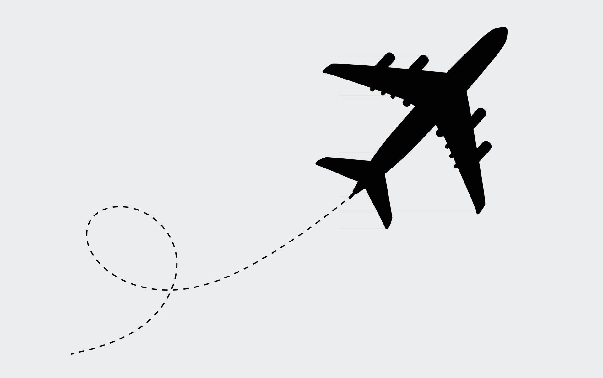

Welcome to SINGAPORE!
" Shape your Future"

SINGAPORE
While the earliest known historical records of Singapore are shrouded in time, a third century Chinese account describes it as "Pu-luo-chung", referring to "Pulau Ujong" which means the "island at the end of a peninsula" in the Malay language. Later, the city was known as Temasek ("Sea Town"), when the first settlements were established from AD 1298-1299. During the 14th century, this small but strategically-located island earned a new name. According to legend, Sang Nila Utama, a Prince from Palembang (the capital of Srivijaya), was out on a hunting trip when he caught sight of an animal he had never seen before. Taking it to be a good sign, he founded a city where the animal had been spotted, naming it “The Lion City” or Singapura, from the Sanskrit words “simha” (lion) and “pura” (city). The city was then ruled by the five kings of ancient Singapura. Located at the tip of the Malay Peninsula, the natural meeting point of sea routes, the city flourished as a trading post for vessels such as Chinese junks, Arab dhows, Portuguese battleships, and Buginese schooners.